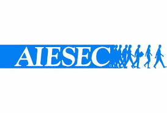

Experience
üíº Work Experience
-
 Algorithm Engineer Intern
Algorithm Engineer Intern
Huawei Cloud Computing Bu, Huawei — June–Present 2025 -
Digital Learning Intern
Information Services Group, University of Edinburgh — May–Aug 2023
• Worked with the DLAM team on digital learning tools, accessibility testing, and tool migration.
• Participated in user testing and content development.
• Awarded the Edinburgh Award for Work Experience. -
Product Test Engineer Assistant
Fuzhou RUIHENG Electronic Technology — Jul–Aug 2021
• Assisted in software testing and hardware inspection.
• Gained experience in test documentation and market research.
üî¨ Research Experience
-
Research Assistant
Carnegie Mellon University (Remote) — Oct 2020–Feb 2021
• Contributed to "The Algorithms for Big Data" under Prof. David Woodruff.
• Focused on ML-based image recognition using Python.
• Co-authored paper "Turning Real Photos into Animation" (to appear on EI).
üåç Leadership & Volunteering
-

Vice President of Events & Partnership
AIESEC in Edinburgh — Feb 2023–Present
• Led a 14-person team to organize large-scale cultural events.
• Managed stakeholders, speakers, and logistics.
• Awards: Best LC UK, Most Rippled LC, Edinburgh Award for Leadership. -
FCo-founder & Executive Board Member
Fujian Overseas Talent Development Association — Sep 2023–Present
• Launched and led student-alumni collaboration and networking projects.